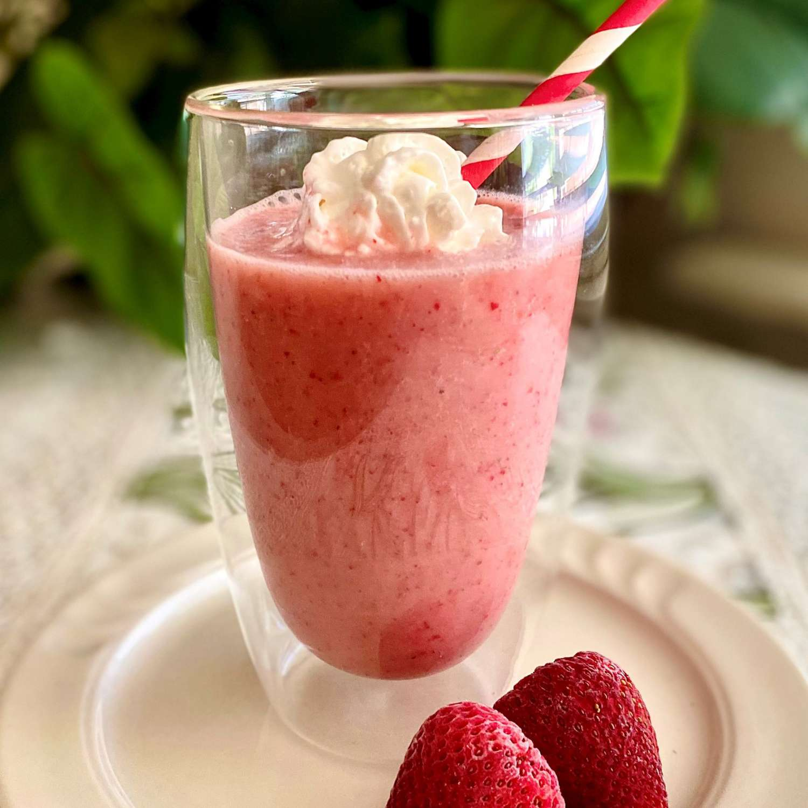

Strawberry milkshake recipe!

Strawberry milkshakes are a hit at our house! This classic dessert reminds me of summer nights,
and we whip these up as often as possible to eat outside while enjoying amazing summer nights
Not only is this strawberry milkshake recipe so delicious, but it’s easy! And who doesn’t like a recipe that their kids can whip up themselves
Ingridients:
- Vanilla Ice Cream
- Frozen Sliced Strawberries
- Milk
- Whipped Topping
Steps:
- Combine: Place the scoops of vanilla ice cream in a blender. Pour in the milk and sweetened strawberries.
- Blend: Blend on high until the ingredients are smooth and incorporated.
- Serve: Top with whipped topping and enjoy!